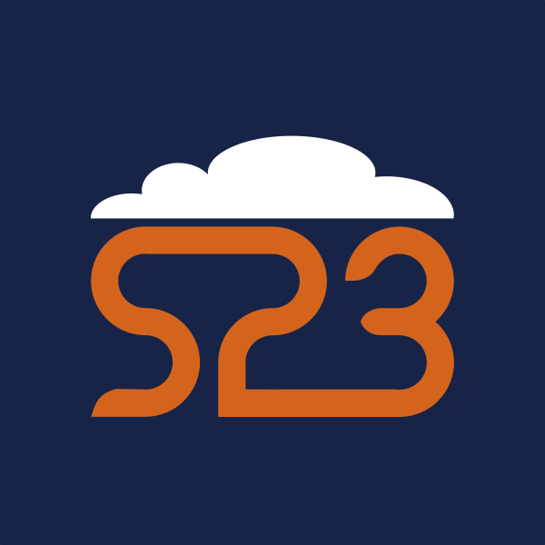
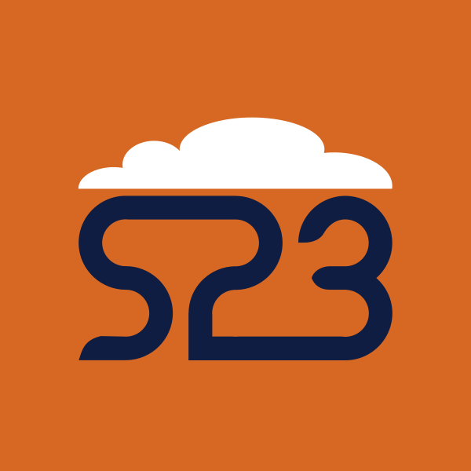
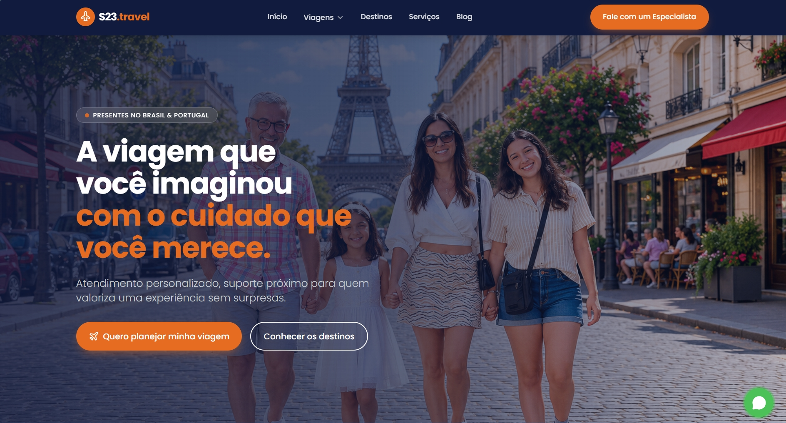
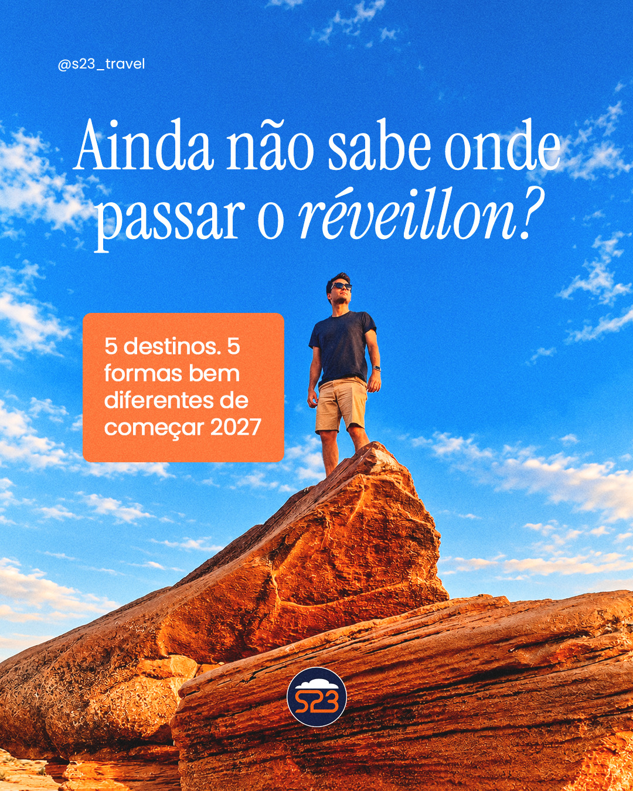
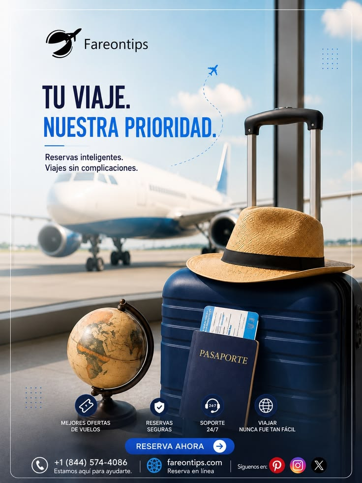

Marca
Logotipo e acervo
Os três logos são arquivos reais da marca — nenhum foi redesenhado. Use o circular no header e no favicon, o principal em fundo navy e o secundário em fundo terracota. Não recolorir, não distorcer, não recortar a nuvem.
Lockups oficiais


Regras de uso
Área de respiro e tamanho
Respiro mínimo equivalente à altura da nuvem (cerca de 12% do símbolo) em todos os lados. Tamanho mínimo de 28px para o símbolo circular e 40px no header.
Faça / não faça
✓Use o arquivo original, sem recolorir nem redesenhar.
✓Sobre navy use o principal; sobre terracota use o secundário.
✓Mantenha a proporção e a área de respiro.
✕Não aplique sombra, gradiente ou contorno no símbolo.
✕Não separe a nuvem do monograma.
✕Não coloque o logo principal sobre foto sem scrim.
Inventário de arquivos
Nomes originais preservados em `assets/` e `fonts/`. Dimensões medidas nos arquivos entregues.
Favicon.png128×128 · aba do navegador

screenshot-1794165842684.png1888×1016 · hero de referência do site

Captura de tela…s23.travel.jpeg1763×2972 · página de destinos

SaveClip.App_841064118…jpg1080×1350 · campanha réveillon
SaveClip.App_753197564…jpg1080×1350 · post de destino

travel.jpg736×981 · referência de terceiro (não usar)
Licença: os posts do @s23_travel são conteúdo próprio da marca. `travel.jpg` é um banner Fareentips de terceiro, sem licença registrada — mantido no acervo apenas como referência e explicitamente fora do uso no produto.